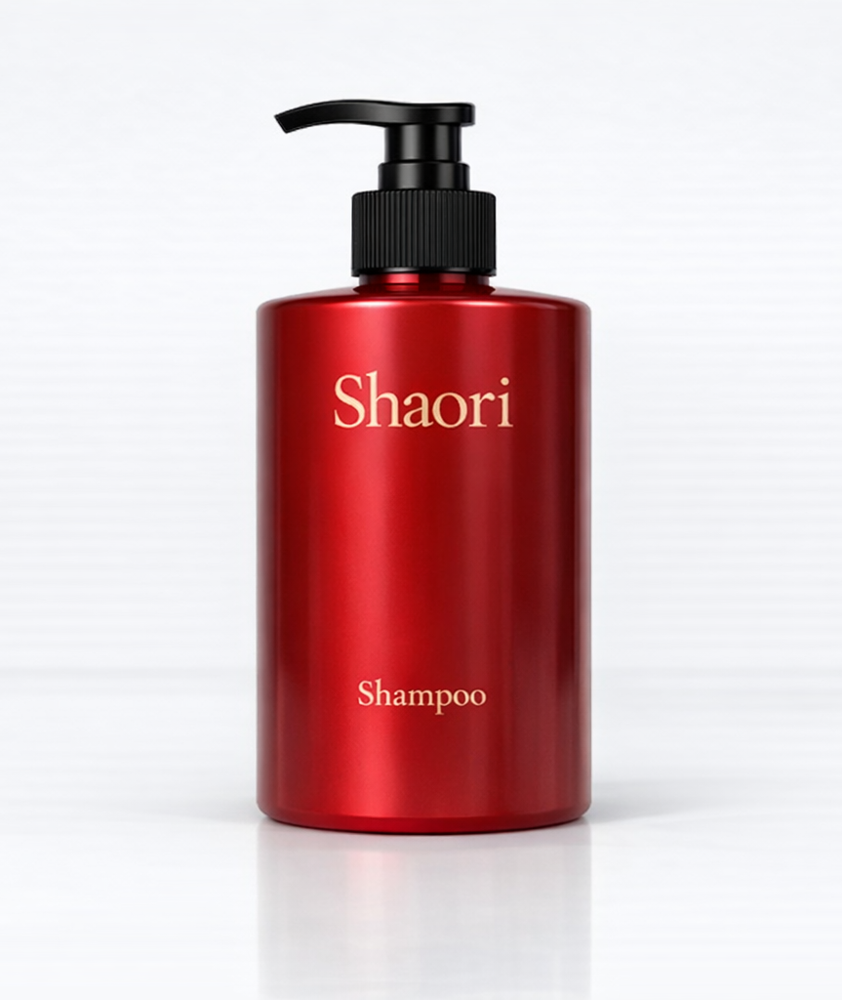

Chinese traditie. Pure luxe.
Een luxueuze shampoo geïnspireerd op eeuwenoude Chinese haartradities. Verrijkt met gefermenteerd rijstwater voor glans, kracht en zachtheid.
€29,95
Shaori combineert eeuwenoude kennis rond gefermenteerd rijstwater met moderne formuleringen. Geen gimmicks, maar zorgvuldig geselecteerde ingrediënten voor zichtbaar resultaat.
| INCI | Functie |
|---|---|
| Aqua | Basis, oplosmiddel |
| Oryza Sativa (Rice) Ferment Filtrate | Versterkt, voedt en geeft glans |
| Glycerin | Hydraterend, vochtbindend |
| Cocamidopropyl Betaine | Milde reiniger, schuimvormer |
| Parfum | Subtiele geurbeleving |
Gefermenteerd rijstwater helpt het haar zichtbaar meer glans te geven.
Ondersteunt de haarstructuur en vermindert haarbreuk.
Hydrateert zonder het haar te verzwaren of vet te maken.
Geschikt voor dagelijks gebruik dankzij milde reinigers.
Maak het haar volledig nat met warm water.
Breng een kleine hoeveelheid shampoo aan en masseer zachtjes in de hoofdhuid en lengtes.
Laat 1–2 minuten inwerken en spoel grondig uit.
Gefermenteerd rijstwater, aminozuren, antioxidanten en een sulfaatvrije basis die het haar voedt zonder het te verzwaren.